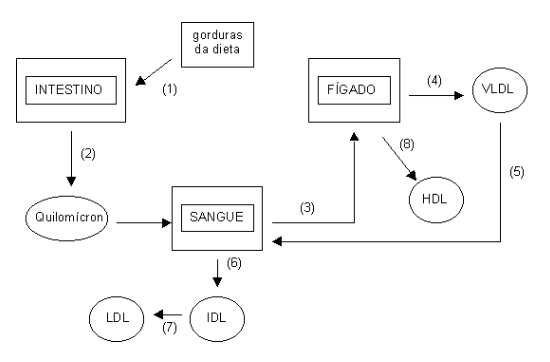
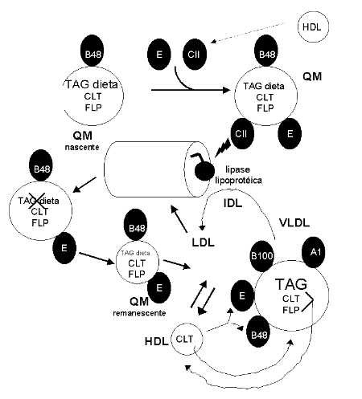

16 Transporte Lipídico
16.1 Introdução
O corpo dos animais é formado por um grande percentual de água. Gordura não se mistura em água. Sendo assim, é necessário um sistema de transporte especial das gorduras no organismo, para que elas sejam aproveitadas pelas células. Proteínas se misturam em água. Neste caso, basta ligar as gorduras em algumas proteínas especiais, as lipoproteínas, e transportá-las pelo sangue. As lipoproteínas têm nomes especiais, dependendo de sua densidade.
Como a densidade de gorduras é menor do que a de proteínas, as lipoproteínas de maior densidade são aquelas que carregam menos gordura e, portanto, mais saudáveis.
Assim é o caso da HDL, sigla em inglês que quer dizer lipoproteína de alta densidade, o chamado bom colesterol, pois pega o colesterol dos tecidos para degradá-lo no fígado. Já a LDL, sigla para lipoproteína de baixa densidade, carrega muita gordura e colesterol para os tecidos, sendo chamada de mal colesterol, pois pode acumulá-los nos vasos causando arterosclerose e infarto. Existem ainda mais 3 lipoproteínas, produzidas no fígado ou nos intestinos, que ajudam no transporte lipídico. Em conjunto, as lipoproteínas com alto teor de gordura, como a VLDL, IDL e o quilomícron (quilo, do intestino, assim como quimo é do estômago), vão passando suas gorduras para outras lipoproteínas, alterando a densidade e o tamanho das partículas, até a degradação dos lipídios dentro das células. Agora, é claro que as lipoproteínas não vão passando essas gorduras a esmo. Elas precisam de um sinal, e esse sinal se dá na forma de pequenas proteínas que vão se ligando e desligando das lipoproteínas, informando-as do melhor momento para liberar suas gorduras.

16.2 Detalhes
O transporte e manutenção de lipídios solúveis no plasma, como triacilglicerol e colesterol, é realizado por albumina sérica e por lipoproteínas. Lipoproteínas plasmáticas são complexos que possuem um cerne lipídico, formado por triacilglicerol, fosfolipídios e colesterol, e uma superfície polar de proteínas, as apolipoproteínas, que se apresentam combinadas com colesterol esterificado. As apolipoproteínas possuem subdivisão de A a H. Dependendo das densidades e composição lipídica, as lipoproteínas são denominadas QM (quilomícron), VLDL (Very Low Density Lipoprotein), IDL (Intermediary Density Lipoprotein), LDL (Low Density Lipoprotein), o vulgarmente conhecido mal-colesterol, e HDL (High Density Lipoprotein), o bom colesterol.
As funções destas lipoproteínas abrangem composição estrutural das partículas, fornecimento de sítios de reconhecimento para receptores da superfície celular, e ativação e auxílio como coenzimas, para as enzimas envolvidas no metabolismo das lipoproteínas. O metabolismo dos quilomicra se inicia no retículo endoplasmático da mucosa intestinal, onde são embaladas juntamente com o triacilglicerol da dieta, colesterol, fosfolipídios e apolipoproteínas. O produto final é secretado pelo complexo de Golgi.
Existem dois tipos de quilomicra, os nascentes, secretados com apo B-48, apo-E e apo C-II, e liberados no plasma, e os remanescentes, um quilomícron um pouco menor e mais denso. O quilomícron remanescente é produzido quando a apo C-II das paredes dos capilares hidrolisa o triacilglicerol do cerne da partícula, sucedendo-se a redução de volume e aumento de densidade desta (apo-C são devolvidas ao HDL).
Os quilomícrons remanescentes combinam-se com os receptores hepáticos (B-48 e E), seguindo-se endocitose e liberação de aminoácidos, colesterol livre e ácidos graxos na célula. O metabolismo da VLDL se inicia no fígado. A VLDL compõe-se predominantemente de triacilglicerol, que é transportado para os tecidos. Liberados do fígado, possuem apo B-100 e A-1, recebem apo B-48 e E da HDL. À medida que circulam, reduzem o seu tamanho por ação da lipase lipoprotéica, e aumenta de densidade, por doação de apo-C e apo-E para HDL. Ocorre então uma transferência de ésteres de colesterila da HDL para a VLDL, com troca concomitante de fosfolipídios e triacilglicerol da VLDL à HDL. No plasma, ocorre a conversão à LDL, com a formação de uma lipoproteína intermediária, a IDL.
A LDL, com menor teor de apolipoproteínas e de triacilglicerol, possui alto teor de colesterol e ésteres de colesterila, e sua função principal é transferi-los aos tecidos. Essa operação é realizada através da deposição daqueles nas membranas das células em que entram em contato, com auxílio de reconhecimento de receptores para apo B-100. As LDL são internalizadas, assim como quilomicras e HDL, por endocitose em fendas de clatrina contendo receptores de LDL. O revestimento de clatrina, um conjunto de proteínas associadas que formam um invólucro na partícula, é retirado, gerando vesículas de endossomos. Com a redução do pH endossômico, ocorre um desligamento da LDL de seu receptor, o qual pode ser reciclado à superfície, enquanto que a LDL é degradada à aminoácidos, colesterol, ácidos graxos e fosfolipídios.

O metabolismo da HDL se inicia na sua síntese hepática. As HDL removem e esterificam, por intermédio da LCAT, lecitina acil transferase, o colesterol livre de tecidos extra-hepáticos, fornecem apo C-II (reservatório de apolipoproteínas), transportam ésteres de colesterila ao fígado, e transferem ésteres de colesterila à VLDL e LDL.
Captadas por endocitose hepática, têm seus ésteres de colesterila degradados, com o colesterol livre podendo ser reembalado em outras lipoproteínas, convertido em ácidos biliares, ou excretado através da bile. A HDL, inicialmente discóide, vai atingindo uma forma esferoidal à medida em que ocorre um acúmulo de colesterol.
A arterosclerose é uma doença típica do transporte lipídico. Ocorre por migração e modificação de monócitos em macrófagos no endotélio, tornando-os espumosos por captação e oxidação de LDL (macrófagos “scaranger”, com receptores de baixa afinidade por LDL); esta modificação celular resulta em acúmulo local de macrófagos, e permite uma liberação de fatores de crescimento de células musculares lisas e de cálcio, gerando uma calcificação local, e produzindo a placa ateromatosa.
Outras doenças, mais propriamente de origem genética, incluem a hiperlipidemia tipo I (hiperquilomicronemia familiar), uma deficiência na lipase lipoprotéica ou apo C-II, levando a um acúmulo de lipoproteínas ricas em triacilglicerol no plasma. A hiperlipidemia tipo II (hiperbetalipoproteinemia familiar), por sua vez, decorre de uma deficiência em receptores de LDL, com acúmulo de LDL e colesterol plasmáticos. Existe também uma doença rara denominada de analbuminemia, onde ocorre uma perda quase completa de albumina sérica, que praticamente elimina o transporte lipídico por esta proteína. Deficiência na lipase lipoprotéica também pode resultar em xantoma eruptivo, um depósito patológico de gordura na pele, pela incapacidade de processamento de quilomicra.
16.2.1 Manteiga, margarina e gordura vegetal hidrogenada.
À despeito da grande variabilidade de teor de gorduras e óleos em carcaças e sementes, existe hoje um consenso em relação à promoção da saúde humana pela ingestão de derivados comerciais dos mesmos e os níveis consequentes de LDL, HDL, triglicérides, e colesterol. De um modo geral, o consumo de óleos é superior em termos terapêuticos ao de gorduras saturadas e gordura vegetal hidrogenada. A margarina, que apesar de sofrer uma transformação química prejudicial ao consumo humano, a transesterificação obrigatória em sua elaboração, parece ser de valor de superior ao da manteiga e esta, ao da gordura hidrogenada e gorduras saturadas.
Isto se deve ao fato de ocorrer uma redução no teor de ácidos graxos monoinsaturados (óleo de soja, óleo de oliva), polinsaturados e polinsaturados essenciais (\(\omega\)-3 e \(\omega\)-6, óleos vegetais e de peixes de água fria, salmão, arenque, bacalhau e sardinha), e crescente no de saturados e colesterol, do óleo (soja, milho, canola) à gordura animal (ácido palmítico, ácido esteárico, colesterol).
Apesar de não serem bem determinados os mecanismos moleculares em que os ácidos graxos atuam, sabe-se atualmente que os monoinsaturados são excelentes protetores cardiovasculares, além de atuarem como pró-cicatrizantes e antioxidantes. Os polinsaturados vem em segundo plano, com a desvantagem de seus constituintes alimentares normalmente ser acompanhados de teores significativos de ácidos graxos saturados (hidrogenação dos óleos vegetais na produção da margarina).
mbos, contudo, estão reportados aumentar o teor de HDL -colesterol e reduzir o de LDL-colesterol e triglicerídeos plasmáticos. Além disso também atuam aumentando os níveis de ácido docosohexaenóico cerebral, um ácido graxo polinsaturado de 22 carbonos muito importante no desenvolvimento e maturação do sistema nervoso. Já manteigas, gordura vegetal hidrogenada e gorduras animais possuem um teor progressivo de ácidos graxos saturados (lembrando que o colesterol está presente apenas nos tecidos animais).
Estes lipídeos são conhecidos aumentar os teores de triglicérides, LDL-colesterol, a relação LDL / HDL, e o colesterol total sanguíneo, todos envolvidos no comprometimento de vasos sanguíneos e desenvolvimento da arterosclerose. Não obstante, existem teores variados de ácidos graxos saturados e colesterol na carcaça animal. Assim, a carne de frango, sem a pele, possui um teor de colesterol próximo a do suíno e do coelho, todas com reduzido valor do mesmo frente à carne bovina.